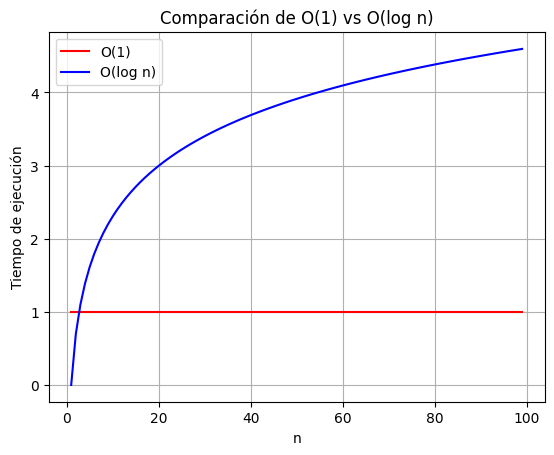
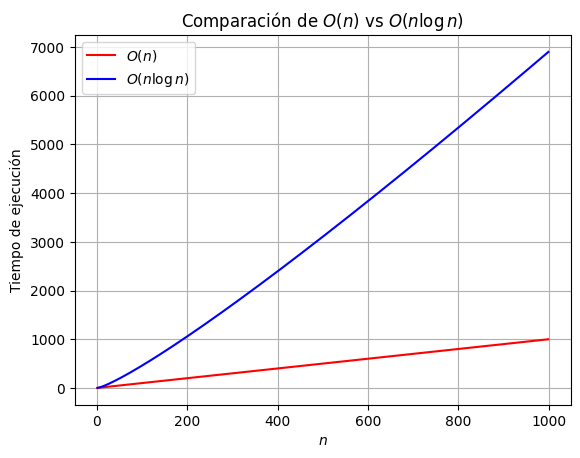
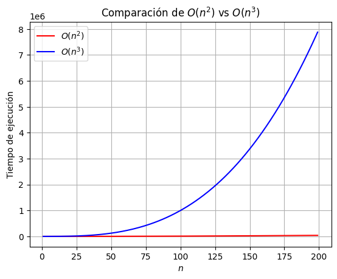
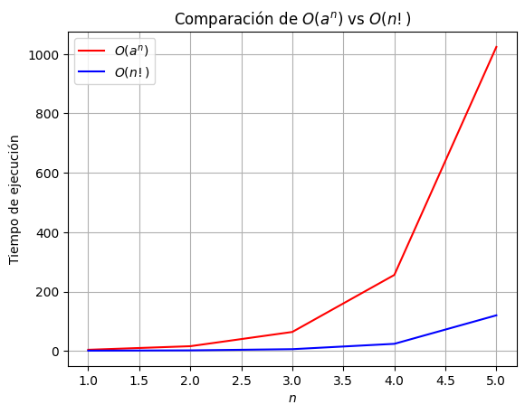
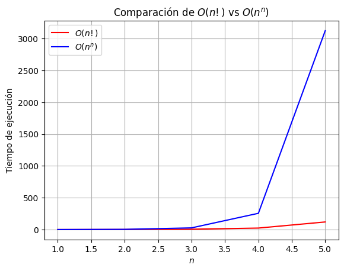

"""
Este notebook analiza, compara y grafica órdenes de crecimiento algorítmico,
evaluando su impacto computacional en diferentes escenarios.
"""
import math
import matplotlib.pyplot as plt
import numpy as np
import pandas as pdReporte Escrito: Experimentos y análisis
Alumno: David Segundo Garcia
Introducción
El estudio de la eficiencia algorítmica es crucial en la informática, ya que permite evaluar el comportamiento de los algoritmos ante diferentes volúmenes de datos. Este análisis no solo ayuda a seleccionar la mejor opción para un problema determinado, sino que también proporciona información sobre la escalabilidad de las soluciones computacionales. Un algoritmo eficiente puede significar la diferencia entre una ejecución en segundos o en horas, dependiendo del crecimiento del tamaño de la entrada.
Las notaciones asintóticas, como \(O(n)\), \(Θ(n)\) y \(Ω(n)\), permiten describir el comportamiento del tiempo de ejecución de un algoritmo en el peor, promedio y mejor caso, respectivamente. Estas notaciones ayudan a comparar algoritmos sin necesidad de realizar pruebas empíricas extensivas, ya que proporcionan una medida teórica del rendimiento. Al utilizar estas herramientas, los desarrolladores pueden tomar decisiones informadas sobre qué algoritmo implementar en función de las necesidades específicas del sistema (Kleinberg & Tardos, 2005).
En este trabajo, realizaremos un análisis comparativo de algoritmos clásicos de búsqueda y ordenamiento, aplicando mediciones experimentales y teóricas para evaluar su eficiencia. Se examinará el impacto del tamaño de la entrada en el tiempo de ejecución y el consumo de memoria, identificando cuáles estrategias son más adecuadas para diferentes contextos computacionales. Esto permitirá obtener una visión clara de las ventajas y limitaciones de cada enfoque en términos de rendimiento y escalabilidad.
Instrucciones
Compara mediante simulación en un notebook de Jupyter o Quarto los siguientes órdenes de crecimiento:
- ( O(1) ) vs ( O(n) )
- ( O(n) ) vs ( O(n n) )
- ( O(n^2) ) vs ( O(n^3) )
- ( O(a^n) ) vs ( O(n!) )
- ( O(n!) ) vs ( O(n^n) )
- ( O(1) ) vs ( O(n) )
Escoge los rangos adecuados para cada comparación, ya que como será evidente después, no es práctico fijar los rangos.
Crea una figura por comparación, i.e., teniendo como resultado cinco figuras.
Discute lo observado por figura.
Crea una tabla donde muestre tiempos de ejecución simulados para algoritmos ficticios que tengan los órdenes de crecimiento anteriores, suponiendo que cada operación tiene un costo de 1 nanosegundo.
- Usa diferentes tamaños de entrada ( n = 100 ); ( n = 1000 ); ( n = 10000 ); ( n = 100000 ).
- Nota que para algunas fórmulas, los números pueden ser muy grandes (usa el foro de dudas si llegas a tener problemas).
- Usa diferentes tamaños de entrada ( n = 100 ); ( n = 1000 ); ( n = 10000 ); ( n = 100000 ).
Discute las implicaciones de costos de cómputo necesarios para manipular grandes volúmenes de información, en el mismo notebook.
Solución
Definimos las funciones que usaremos:
# O(1) - Tiempo constante
def constante(n: int) -> int:
"""Retorna un valor constante de 1.
Args:
n (int): Número de entrada (no afecta la salida).
Returns:
int: Siempre retorna 1.
"""
return 1
# O(log n) - Crecimiento logarítmico
def logaritmico(n: int) -> float:
"""Calcula el logaritmo natural de n.
Args:
n (int): Número entero positivo.
Returns:
float: Logaritmo de n en base e.
"""
return math.log(n)
# O(n) - Crecimiento lineal
def lineal(n: int) -> int:
"""Retorna el mismo valor de n.
Args:
n (int): Número entero positivo.
Returns:
int: El mismo número n.
"""
return n
# O(n log n) - Crecimiento casi lineal
def n_log_n(n: int) -> float:
"""Calcula n multiplicado por su logaritmo natural.
Args:
n (int): Número entero positivo.
Returns:
float: Resultado de n * log(n).
"""
return n * math.log(n)
# O(n^2) - Crecimiento cuadrático
def cuadratico(n: int) -> int:
"""Calcula el cuadrado de n.
Args:
n (int): Número entero positivo.
Returns:
int: n elevado al cuadrado.
"""
return n ** 2
# O(n^3) - Crecimiento cúbico
def cubico(n: int) -> int:
"""Calcula el cubo de n.
Args:
n (int): Número entero positivo.
Returns:
int: n elevado al cubo.
"""
return n ** 3
# O(a^n) - Crecimiento exponencial (a = 2 por defecto)
def exponencial(n: int, a: int = 2) -> int:
"""Calcula a elevado a la potencia de n.
Args:
n (int): Número entero positivo.
a (int, optional): Base de la exponenciación. Por defecto es 2.
Returns:
int: Resultado de a^n.
"""
return a ** n
# O(n!) - Crecimiento factorial
def factorial(n: int) -> int:
"""Calcula el factorial de n.
Args:
n (int): Número entero positivo.
Returns:
int: Factorial de n (n!).
"""
return math.factorial(n)
# O(n^n) - Crecimiento superexponencial
def super_exponencial(n: int) -> int:
"""Calcula n elevado a la potencia de n.
Args:
n (int): Número entero positivo.
Returns:
int: n^n.
"""
return n ** nComparativa de la implementaciòn de las funciones
1.- \(O(1)\) vs \(O(\log n)\)
Para esta comparación, elegimos un rango de valores relativamente pequeño. La razón es que la función \(O(1)\) tiene un crecimiento constante sin importar el tamaño de la entrada, mientras que \(O(\log n)\) crece de manera muy lenta a medida que \(n\) aumenta. Dado que el crecimiento logarítmico es mucho menor que el lineal, podemos visualizar ambas funciones en un mismo gráfico sin la necesidad de un rango de valores extremadamente grande.
Esta comparación nos permite observar cómo, incluso para valores grandes de \(n\), la diferencia entre \(O(1)\) y \(O(\log n)\) sigue siendo significativa.
# Definimos el rango de valores
n_values = np.arange(1, 100) # Rango de 1 a 99
# Generamos los valores de las funciones
O_1_values = [constante(n) for n in n_values]
O_log_n_values = [logaritmico(n) for n in n_values]
# Graficamos la comparación
plt.plot(n_values, O_1_values, label='O(1)', color='red')
plt.plot(n_values, O_log_n_values, label='O(log n)', color='blue')
plt.xlabel('n')
plt.ylabel('Tiempo de ejecución')
plt.title('Comparación de O(1) vs O(log n)')
plt.legend()
plt.grid(True)
plt.show()
En esta gráfica, se puede observar claramente la diferencia en el tiempo de ejecución entre dos funciones con distintas complejidades algorítmicas. A medida que el tamaño de la entrada \(n\) aumenta, ambas funciones muestran comportamientos diferentes, lo que tiene un impacto significativo en su rendimiento computacional.
La función \(O(1)\) se representa como una línea horizontal, lo que indica que su tiempo de ejecución permanece constante sin importar el tamaño de la entrada. Es decir, si la entrada tiene un tamaño de 10, 1000 o 10,000 elementos, el tiempo de ejecución seguirá siendo el mismo. Esto la convierte en la opción más eficiente en términos de rapidez y estabilidad, ya que su costo computacional no varía con el tamaño de los datos.
En contraste, la función \(O(\log n)\) experimenta un crecimiento logarítmico a medida que la entrada se incrementa. Esto significa que, si duplicamos el tamaño de la entrada, el tiempo de ejecución no se duplica, sino que crece de manera más lenta y progresiva. En la gráfica, se observa una curva ascendente suave que aumenta gradualmente sin alcanzar niveles drásticos. Aunque esta función no es tan rápida como \(O(1)\), sigue siendo altamente eficiente, especialmente cuando se manejan volúmenes de datos grandes.
Observaciones
La diferencia clave entre ambas funciones radica en la forma en que escalan con el tamaño de la entrada, ya que mientras \(O(1)\) mantiene un tiempo de ejecución constante, \(O(\log n)\) presenta un crecimiento ligero pero progresivo. En términos prácticos, para valores pequeños de \(n\), la diferencia entre ambas funciones es casi imperceptible; sin embargo, a medida que \(n\) aumenta considerablemente, \(O(1)\) destaca por su rapidez y eficiencia, mientras que \(O(\log n)\) sigue siendo competitivo, aunque con un incremento gradual en el tiempo de ejecución. La elección entre estas funciones depende del contexto y del tamaño de la entrada, pues si la prioridad es maximizar la eficiencia temporal, \(O(1)\) es la mejor opción, pero si se busca un equilibrio entre escalabilidad y rendimiento en volúmenes de datos más grandes, \(O(\log n)\) sigue siendo una alternativa viable y eficiente.
2.- \(O(n)\) vs \(O(n \log n)\)
Para esta comparación, utilizamos un rango de valores más amplio, ya que tanto \(O(n)\) como \(O(n \log n)\) presentan diferencias más notables a medida que \(n\) aumenta. Esto permite visualizar con mayor claridad cómo crecen ambas funciones y en qué punto comienza a ser significativa la diferencia en sus tiempos de ejecución.
# Definimos el rango de valores
n_values = np.arange(1, 1000) # Rango de 1 a 999
# Graficamos las funciones
plt.plot(n_values, [lineal(n) for n in n_values], label='$O(n)$', color='red') # O(n)
plt.plot(n_values, [n_log_n(n) for n in n_values], label='$O(n \log n)$', color='blue') # O(n log n)
# Configuración de la gráfica
plt.xlabel('$n$')
plt.ylabel('Tiempo de ejecución')
plt.title('Comparación de $O(n)$ vs $O(n \log n)$')
plt.legend()
plt.grid(True)
plt.show()
En esta gráfica, podemos observar cómo el tiempo de ejecución de ambas funciones aumenta a medida que crece el tamaño de la entrada \(n\). Sin embargo, su comportamiento difiere significativamente debido a la diferencia en sus tasas de crecimiento.
La función \(O(n)\) muestra un crecimiento estrictamente lineal, lo que significa que el tiempo de ejecución crece de manera proporcional al tamaño de la entrada. Si \(n\) se duplica, el tiempo de ejecución también se duplica. Esto indica que el número de operaciones realizadas es constante por cada unidad de entrada, lo que hace que esta función sea predecible y eficiente en términos de escalabilidad.
En contraste, la función \(O(n \log n)\) tiene un crecimiento ligeramente más acelerado debido al factor logarítmico. La gráfica muestra una curva que se eleva de forma progresiva conforme aumenta \(n\), lo que indica que, aunque al principio la diferencia entre ambas funciones es mínima, con valores grandes de \(n\), la brecha en tiempo de ejecución se hace cada vez más notoria. Este tipo de complejidad es frecuente en algoritmos que requieren dividir y combinar subproblemas, como los algoritmos de ordenamiento eficientes.
Observaciones
Aunque ambas funciones crecen con el tamaño de la entrada, \(O(n \log n)\) lo hace a una velocidad mayor que \(O(n)\), por lo que, si bien en entradas pequeñas el tiempo de ejecución es similar, a medida que \(n\) aumenta, \(O(n \log n)\) demanda más recursos computacionales. En términos prácticos, \(O(n)\) es preferible cuando se busca eficiencia y predictibilidad, mientras que \(O(n \log n)\) es más adecuado en problemas que requieren estrategias de ordenamiento o dividir y conquistar, aunque con un costo computacional mayor.
3.- \(O(n^2)\) vs \(O(n^3)\)
En este caso, optamos por un rango de valores más reducido en comparación con los anteriores, debido a que ambas funciones presentan un crecimiento significativamente más acelerado. Dado que su tasa de incremento es rápida, no es necesario utilizar valores demasiado grandes de \(n\) para visualizar claramente la diferencia en su comportamiento.
# Definimos el rango de valores
n_values = np.arange(1, 200) # Rango de 1 a 199
# Graficamos las funciones
plt.plot(n_values, [cuadratico(n) for n in n_values], label='$O(n^2)$', color='red') # O(n^2)
plt.plot(n_values, [cubico(n) for n in n_values], label='$O(n^3)$', color='blue') # O(n^3)
# Configuración de la gráfica
plt.xlabel('$n$')
plt.ylabel('Tiempo de ejecución')
plt.title('Comparación de $O(n^2)$ vs $O(n^3)$')
plt.legend()
plt.grid(True)
plt.show()
En esta gráfica, se analiza la diferencia en el tiempo de ejecución de dos funciones con complejidades algorítmicas significativamente mayores a las vistas anteriormente. Debido a la rapidez con la que crecen ambas, se ha elegido un rango más pequeño de valores de \(n\), lo que permite visualizar con mayor claridad la diferencia entre ellas.
La función \(O(n^2)\) se representa en la gráfica como una curva de crecimiento cuadrático, lo que significa que su tiempo de ejecución aumenta proporcionalmente al cuadrado del tamaño de la entrada. En términos prácticos, si \(n\) se duplica, el tiempo de ejecución se cuadruplica. Este tipo de complejidad es frecuente en algoritmos que requieren comparar pares de elementos o realizar múltiples iteraciones anidadas sobre la misma estructura de datos.
La función \(O(n^3)\) presenta un crecimiento aún más acelerado, lo que se refleja en la gráfica con una curva que se eleva más rápidamente en comparación con \(O(n^2)\). Su crecimiento cúbico implica que al duplicar el tamaño de la entrada, el tiempo de ejecución aumenta ocho veces, lo que representa un incremento exponencialmente mayor en comparación con el comportamiento cuadrático. Este tipo de complejidad es común en algoritmos que requieren iteraciones triples anidadas o cálculos en estructuras tridimensionales.
Observaciones
Si bien ambas funciones exhiben un crecimiento acelerado, la diferencia en sus tasas de incremento se hace evidente conforme aumenta \(n\), pues mientras \(O(n^2)\) mantiene un crecimiento controlado y moderado, la función \(O(n^3)\) se vuelve prohibitiva rápidamente en términos de tiempo de ejecución, lo que la hace impráctica para valores grandes de \(n\). Aunque en entradas pequeñas la diferencia en rendimiento puede no ser crítica, a medida que el tamaño de los datos crece, el impacto del término cúbico se vuelve dominante, incrementando significativamente el costo computacional y volviendo esencial la selección de un algoritmo más eficiente en aplicaciones donde el rendimiento sea un factor determinante.
4.- \(O(a^n)\) vs \(O(n!)\)
En este caso, es necesario utilizar un rango de valores considerablemente pequeño, ya que la función factorial \(O(n!)\) crece a un ritmo extremadamente acelerado. Para garantizar una comparación clara y comprensible, se ha establecido un valor fijo de \(a\), asignándole el valor de \(5\) con el objetivo de evitar que el crecimiento sea trivial y proporcionar un ejemplo representativo del comportamiento de ambas funciones.
# Definimos el rango de valores
n_values = np.arange(1, 6) # Rango de 1 a 5 debido al crecimiento acelerado de O(n!)
# Graficamos las funciones
plt.plot(n_values, [exponencial(n, 4) for n in n_values], label='$O(a^n)$', color='red') # O(a^n) con a=4
plt.plot(n_values, [factorial(n) for n in n_values], label='$O(n!)$', color='blue') # O(n!)
# Configuración de la gráfica
plt.xlabel('$n$')
plt.ylabel('Tiempo de ejecución')
plt.title('Comparación de $O(a^n)$ vs $O(n!)$')
plt.legend()
plt.grid(True)
plt.show()
Podemos observar que ambas funciones exhiben un comportamiento de crecimiento exponencial, lo que provoca un aumento drástico en el tiempo de ejecución conforme incrementa el tamaño de la entrada \(n\). Sin embargo, presentan diferencias notables en la velocidad con la que este crecimiento ocurre.
La función \(O(a^n)\) describe un crecimiento exponencial que se acelera a medida que \(n\) aumenta. La rapidez con la que se eleva la curva dependerá del valor de la constante \(a\), aunque en general, este tipo de complejidad es característica de algoritmos que exploran múltiples combinaciones posibles, como la búsqueda por fuerza bruta.
La función \(O(n!)\) presenta un crecimiento aún más abrupto que la exponencial, lo que se refleja en la gráfica con una curva que asciende casi verticalmente. Este comportamiento es típico de algoritmos que requieren evaluar todas las permutaciones posibles de un conjunto, lo que resulta en un aumento explosivo del tiempo de ejecución incluso para valores pequeños de \(n\).
Observaciones
Aunque ambas funciones experimentan un crecimiento extremadamente rápido, la función \(O(n!)\) incrementa su tiempo de ejecución a un ritmo considerablemente superior al de \(O(a^n)\), lo que la hace ineficiente incluso para valores moderados de \(n\). En términos prácticos, es preferible evitar algoritmos con complejidad factorial siempre que sea posible, ya que su costo computacional se vuelve prohibitivo en muy poco tiempo, mientras que \(O(a^n)\) podría ser aceptable en ciertos escenarios donde \(n\) no sea excesivamente grande; no obstante, en situaciones donde se requiera manejar entradas de gran tamaño, es recomendable buscar soluciones con una complejidad menor.
5.- \(O(n!)\) vs \(O(n^n)\)
Al igual que en el caso anterior, es necesario utilizar un rango de valores reducido, ya que estas funciones presentan las tasas de crecimiento más elevadas analizadas hasta el momento. En particular, \(O(n^n)\) exhibe un incremento aún más acelerado que \(O(n!)\), lo que hace que su tiempo de ejecución se dispare rápidamente conforme aumenta \(n\).
# Definimos el rango de valores
n_values = np.arange(1, 6) # Rango de 1 a 5 debido al crecimiento extremadamente rápido de O(n^n)
# Graficamos las funciones
plt.plot(n_values, [factorial(n) for n in n_values], label='$O(n!)$', color='red') # O(n!)
plt.plot(n_values, [super_exponencial(n) for n in n_values], label='$O(n^n)$', color='blue') # O(n^n)
# Configuración de la gráfica
plt.xlabel('$n$')
plt.ylabel('Tiempo de ejecución')
plt.title('Comparación de $O(n!)$ vs $O(n^n)$')
plt.legend()
plt.grid(True)
plt.show()
La gráfica ilustra la diferencia en los órdenes de crecimiento entre \(O(n!)\) (factorial de \(n\)) y \(O(n^n)\) (n elevado a la \(n\)). Aunque ambas funciones exhiben un crecimiento acelerado, la función \(O(n^n)\) escala a un ritmo exponencialmente mayor que \(O(n!)\), lo que implica una demanda computacional significativamente más elevada.
La función \(O(n!)\) presenta un crecimiento factorial, lo que significa que el tiempo de ejecución aumenta de manera extremadamente rápida conforme crece el tamaño de la entrada. Aunque sigue siendo altamente costosa, en esta comparación es la opción con menor complejidad relativa.
La función \(O(n^n)\) se distingue por una tasa de crecimiento aún más pronunciada, lo que se traduce en una curva que se eleva más rápidamente en la gráfica. Este tipo de complejidad es característica de problemas en los que se exploran combinaciones masivas, como el análisis de espacios de búsqueda en optimización y enumeración exhaustiva.
Observaciones
Dado el rápido crecimiento de ambas funciones, su implementación en escenarios prácticos es inviable en la mayoría de los casos, ya que los tiempos de ejecución se vuelven excesivamente elevados incluso para valores moderados de \(n\). Aunque \(O(n^n)\) crece a una velocidad superior a \(O(n!)\), en la práctica, ambas funciones resultan ineficientes y poco escalables, por lo que es preferible buscar soluciones con complejidades computacionales más manejables.
Crea una tabla donde muestre tiempos de ejecución simulados para algoritmos ficticios que tengan los órdenes de crecimiento anteriores, suponiendo que cada operación tiene un costo de 1 nanosegundo.
- Usa diferentes tamaños de entrada ( n = 100 ); ( n = 1000 ); ( n = 10000 ) y ( n = 100000 ).
- Nota que para algunas fórmulas, los números pueden ser muy grandes (usa el foro de dudas si llegas a tener problemas).
# Definimos los valores de entrada a evaluar
n_values = [1, 10, 100, 1000]
complejidades = {
'O(1)': constante,
'O(log n)': logaritmico,
'O(n)': lineal,
'O(n log n)': n_log_n,
'O(n^2)': cuadratico,
'O(n^3)': cubico,
'O(4^n)': lambda n: exponencial(n, 4),
'O(n!)': factorial,
'O(n^n)': super_exponencial
}
# Función para evaluar cada complejidad en los valores de n y manejar excepciones
def evaluar_complejidad(n_values: list, funciones: dict) -> pd.DataFrame:
"""
Evalúa funciones de complejidad computacional para distintos valores de n.
Args:
n_values (list[int]): Lista de valores de entrada n.
funciones (dict[str, callable]): Diccionario con nombres de funciones y sus implementaciones.
Returns:
pd.DataFrame: DataFrame con los resultados de la evaluación..
"""
resultados = []
for n in n_values:
fila = {'n': n}
for nombre, funcion in funciones.items():
try:
resultado = funcion(n)
fila[nombre] = 'Infinito' if math.isinf(resultado) else f'{resultado:.6e}'
except (OverflowError, ValueError):
fila[nombre] = 'Error'
resultados.append(fila)
return pd.DataFrame(resultados)
# Ejecutamos la evaluación y mostramos el DataFrame
df_resultado = evaluar_complejidad(n_values, complejidades)
display(df_resultado)| n | O(1) | O(log n) | O(n) | O(n log n) | O(n^2) | O(n^3) | O(4^n) | O(n!) | O(n^n) | |
|---|---|---|---|---|---|---|---|---|---|---|
| 0 | 1 | 1.000000e+00 | 0.000000e+00 | 1.000000e+00 | 0.000000e+00 | 1.000000e+00 | 1.000000e+00 | 4.000000e+00 | 1.000000e+00 | 1.000000e+00 |
| 1 | 10 | 1.000000e+00 | 2.302585e+00 | 1.000000e+01 | 2.302585e+01 | 1.000000e+02 | 1.000000e+03 | 1.048576e+06 | 3.628800e+06 | 1.000000e+10 |
| 2 | 100 | 1.000000e+00 | 4.605170e+00 | 1.000000e+02 | 4.605170e+02 | 1.000000e+04 | 1.000000e+06 | 1.606938e+60 | 9.332622e+157 | 1.000000e+200 |
| 3 | 1000 | 1.000000e+00 | 6.907755e+00 | 1.000000e+03 | 6.907755e+03 | 1.000000e+06 | 1.000000e+09 | Error | Error | Error |
El rendimiento de un algoritmo es un factor crucial en la gestión de grandes volúmenes de datos, ya que su eficiencia determina la viabilidad de procesamiento en distintos entornos computacionales. Dependiendo de su complejidad algorítmica, algunos algoritmos escalan bien con el crecimiento de la entrada, mientras que otros pueden volverse imprácticos incluso para valores moderados de \(n\). A continuación, se analizan las principales complejidades y su impacto en el costo computacional:
\(O(1)\) (Tiempo constante): El tiempo de ejecución no varía sin importar el tamaño de los datos de entrada, lo que lo convierte en el caso óptimo en términos de escalabilidad. Este tipo de comportamiento es ideal para estructuras de acceso directo, como consultas en arreglos indexados.
\(O(\log n)\) (Crecimiento logarítmico): La ejecución se incrementa muy lentamente con el tamaño de la entrada, lo que lo hace altamente eficiente en la manipulación de grandes volúmenes de datos. Es común en algoritmos de búsqueda binaria y en estructuras como árboles balanceados.
\(O(n)\) (Crecimiento lineal): A medida que la cantidad de datos aumenta, el tiempo de ejecución crece de manera proporcional. Este comportamiento es adecuado para escenarios donde cada elemento debe ser procesado individualmente, pero puede generar problemas de rendimiento cuando \(n\) es muy grande.
\(O(n \log n)\) (Crecimiento casi lineal): Se encuentra en algoritmos de ordenamiento eficientes como Merge Sort y Quick Sort, proporcionando un balance entre velocidad y escalabilidad. Es una alternativa viable para procesar grandes volúmenes de datos sin que el costo computacional se dispare demasiado rápido.
\(O(n^2)\) (Crecimiento cuadrático): La cantidad de operaciones crece exponencialmente en relación con la entrada, lo que lo hace poco eficiente para grandes conjuntos de datos. Algoritmos con esta complejidad son adecuados solo cuando se trabaja con volúmenes pequeños o cuando no se dispone de opciones más rápidas.
\(O(n^3)\) (Crecimiento cúbico): Similar al cuadrático, pero con un crecimiento aún más pronunciado. Se vuelve ineficaz para grandes datos y solo se justifica en casos donde la estructura del problema requiere múltiples iteraciones anidadas.
\(O(4^n)\) (Crecimiento exponencial, con \(a=4\)): Cada incremento en la entrada provoca una “cuatriplicación” o más en el número de operaciones, lo que lo vuelve impráctico para valores altos de \(n\). Se encuentra en problemas de optimización combinatoria donde se evalúan múltiples configuraciones posibles.
\(O(n!)\) (Crecimiento factorial): Su ejecución escala de forma explosiva y se vuelve inmanejable incluso con valores pequeños de \(n\). Aparece en problemas donde se requiere evaluar todas las permutaciones posibles, como en ciertos algoritmos de fuerza bruta.
\(O(n^n)\) (Crecimiento superexponencial): Representa la mayor tasa de crecimiento analizada, volviéndose inabordable incluso para entradas pequeñas. Se observa en problemas extremadamente complejos donde no se conoce una solución algorítmica eficiente.
Dado el alto impacto que la complejidad algorítmica tiene en el rendimiento computacional, la selección de un algoritmo adecuado es esencial cuando se manejan grandes volúmenes de información. Algoritmos de complejidad constante, logarítmica o lineal son ideales para escenarios escalables, mientras que aquellos con crecimiento cuadrático o superior deben evitarse en la medida de lo posible. En problemas donde la optimización es clave, explorar enfoques alternativos o heurísticos puede marcar la diferencia en términos de eficiencia y viabilidad.
Conclusiones
El estudio de la complejidad algorítmica es un pilar fundamental en la teoría de la computación y el análisis de algoritmos, permitiendo predecir el comportamiento de un programa en función del crecimiento de la entrada \(n\) (Cormen et al., 2022). Desde funciones de tiempo constante \(O(1)\) hasta complejidades factoriales y superexponenciales como \(O(n!)\) y \(O(n^n)\), cada tipo de crecimiento establece las limitaciones y viabilidad de un algoritmo en distintos escenarios. Mientras algunas funciones escalan de manera eficiente y mantienen un crecimiento controlado, otras pueden volverse impracticables incluso con valores moderados de \(n\) debido a su elevada demanda de recursos computacionales.
Los resultados obtenidos confirman que algoritmos con complejidades \(O(1)\), \(O(\log n)\), \(O(n)\) y \(O(n \log n)\) son altamente eficientes y adecuados para el procesamiento de grandes volúmenes de datos, dado que su tiempo de ejecución crece de manera razonable. En contraste, las complejidades cuadráticas \(O(n^2)\) y cúbicas \(O(n^3)\) pueden representar un problema cuando \(n\) crece considerablemente, mientras que las funciones exponenciales y factoriales son extremadamente costosas en términos de tiempo de ejecución. En particular, las funciones \(O(n!)\) y \(O(n^n)\) son las más demandantes en términos computacionales, ya que su crecimiento es explosivo y el número de operaciones necesarias se vuelve inabordable incluso para valores pequeños de \(n\). Este tipo de complejidad es característico de problemas combinatorios y optimización, donde la exploración de todas las posibles soluciones genera costos computacionales prohibitivos.
Desde una perspectiva práctica, la selección de un algoritmo debe priorizar su escalabilidad y eficiencia, especialmente en aplicaciones donde el procesamiento de datos a gran escala es un requisito clave. Minimizar la complejidad computacional es esencial para evitar tiempos de ejecución innecesariamente largos y garantizar la viabilidad de un sistema. En muchos casos, optimizar algoritmos existentes o recurrir a estrategias heurísticas puede ser la mejor alternativa para abordar problemas difíciles sin incurrir en tiempos de ejecución prohibitivos. La eficiencia algorítmica no solo afecta el rendimiento, sino que también determina si un problema computacional es resoluble en un tiempo razonable con los recursos disponibles.
Referencias
Cormen, T. H., Leiserson, C. E., Rivest, R. L., & Stein, C. (2022). Introduction to Algorithms (4th ed.). MIT Press.
Kleinberg, J., & Tardos, É. (2005). Algorithm Design. Pearson Education.